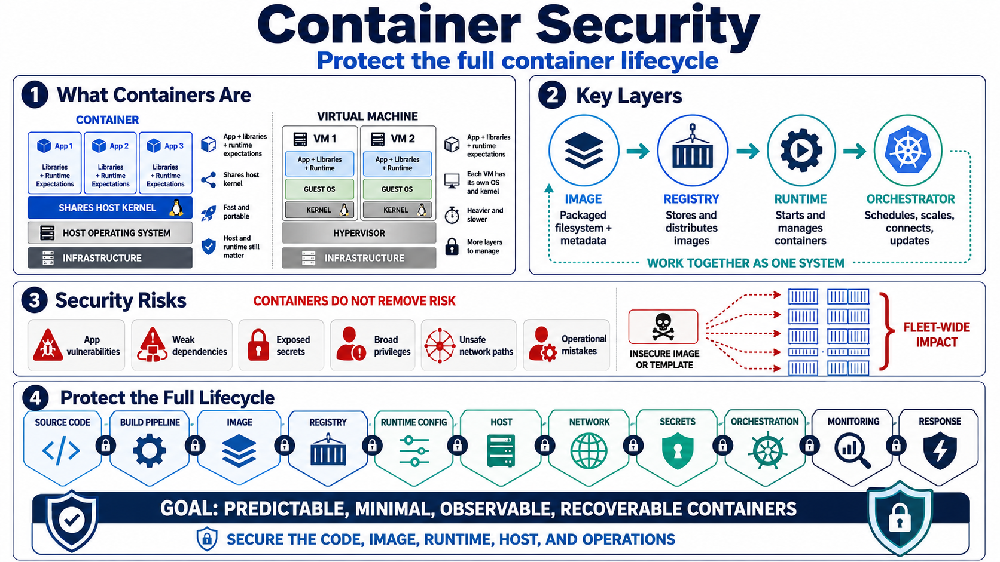

What Container Security Means
Connecting to LMS... Progress: in progress

Narration
Containers are packaged application environments that include an application, its runtime expectations, libraries, and filesystem content needed to run consistently across systems. They are lighter than traditional virtual machines because they usually share the host operating system kernel instead of carrying a full guest operating system. That shared-kernel model is one reason containers are fast and portable, but it also means the host, runtime, and container configuration remain important security concerns.
Several terms matter early. An image is the packaged filesystem and metadata used to create running containers. A registry stores and distributes images. A runtime starts and manages containers on a host. An orchestrator schedules, connects, scales, updates, and supervises many containers across infrastructure. These layers work together, so container security cannot focus on only one file or one running process.
Containers improve deployment consistency, but they do not remove application vulnerabilities, weak dependencies, exposed secrets, broad privileges, unsafe network paths, or operational mistakes. In fact, containers can replicate insecure patterns quickly when an image or deployment template is reused at scale. A small configuration weakness can become a fleet-wide problem if it is built into the standard image or pipeline.
Container security protects the full lifecycle: source code, build pipeline, image, registry, runtime configuration, host, network, secrets, orchestration layer, monitoring, and response. The goal is not to slow container adoption. The goal is to make containerized applications predictable, minimal, observable, recoverable, and aligned with the risk decisions the organization believes it is making.